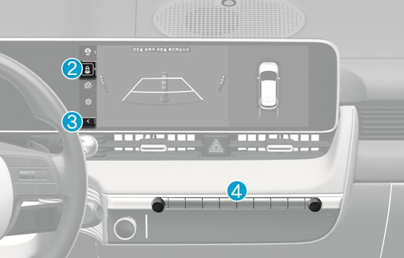
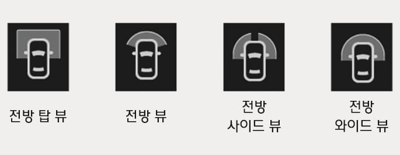
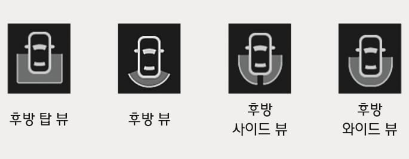

서라운드 뷰 모니터 작동

2C_RearTopViewFunction

2C_SVMRearViewInfo
다음의 각 방법으로 서라운드 뷰 모니터를 켤 수 있습니다.
-
'R'(후진)단으로 변속
-
'P'(주차), 'N'(중립) 또는 'D'(주행)단이고 차량 속도가 10 km/h보다 느릴 때, 주차/뷰 버튼 (1)을 누름
-
서라운드 뷰 모니터 자동 켜짐이 설정되어 있는 상태에서 전방 또는 측방 주차 충돌 경고 발생
다음의 각 방법으로 서라운드 뷰 모니터를 끌 수 있습니다.
-
'R'(후진), 'N'(중립) 또는 'D'(주행)단일 때 'P'(주차)로 변속
-
'P'(주차), 'N'(중립) 또는 'D'(주행)단 일 때
-
차량 속도가 10 km/h보다 빠르게 주행
-
주차/뷰 버튼(1)을 누름
-
서라운드 뷰 모니터 화면의 백 버튼(3)을 누름
-
인포테인먼트 시스템 작동 버튼(4)을 누름
-
기어 변속에 따라 전방 뷰/후방 뷰로 전환됩니다.
서라운드 뷰 모니터 화면의 뷰 전환 버튼(2)을 눌러 뷰를 선택할 수 있습니다.
-
'R'(후진)단이면 후방 탑 뷰, 후방 뷰, 후방 사이드 뷰, 또는 후방 와이드뷰를 선택할 수 있습니다.
-
'P'(주차), 'N'(중립) 또는 'D'(주행)단이면 전방/후방 탑 뷰, 전방/후방 뷰, 전방/후방 사이드 뷰, 또는 전방/후방 와이드뷰를 선택할 수 있습니다.

2C_SVMFrontView

2C_SVMRearView
-
서라운드 뷰 모니터를 켜면 마지막으로 사용한 전방 뷰 또는 후방 뷰가 표시됩니다.
-
'R'(후진)단에서는 항상 후방 뷰가 표시됩니다.
-
'R'(후진)단에서는 인포테인먼트 시스템 작동 버튼(4)을 눌러도 영상이 해제되지 않습니다.
'N'(중립) 또는 'D'(주행) 상태이고 차량 속도가 10 km/h보다 빠르게 주행하는 중에도 주차/뷰 버튼(1)을 눌러 서라운드 뷰 모니터를 켤 수 있습니다.
서라운드 뷰 모니터 화면의 뷰 전환 버튼(2)을 눌러 전방/후방 뷰 또는 전방/후방 와이드 뷰를 선택할 수 있습니다.
주행 중 서라운드 뷰 모니터는 다음의 각 경우 끌 수 있습니다.
-
'P'(주차)단으로 변속
-
주차/뷰 버튼(1)을 누름
-
서라운드 뷰 모니터 화면의 백 버튼(3)을 누름
-
인포테인먼트 시스템 작동 버튼(4)을 누름
-
주행 중 서라운드 뷰 모니터를 켜면 마지막으로 사용한 전방 뷰 또는 후방 뷰가 표시됩니다.
-
주행 중에는 후방 뷰에 후방 주차 가이드라인이 표시되지 않습니다.
-
주행 중 서라운드 뷰 모니터를 켜고 차량 속도가 10 km/h보다 느려져도 후방 뷰는 유지됩니다.
-
주행 중 서라운드 뷰 모니터를 켜면 모든 속도에서 전방/후방 탑 뷰, 전방/후방 사이드 뷰는 비활성화됩니다.
2C_SVM3DView
'R'(후진), 'P'(주차), 'N'(중립), 또는 'D'(주행) 단이고 속도가 10 km/h 이하인 상태에서 서라운드 뷰 모니터가 작동 중이면, 화면의 뷰 전환 버튼(2)의 3D 뷰를 선택하여 기능을 켤 수 있습니다.
-
3D 뷰는 가이드라인을 표시하지 않습니다.
-
전/후방 뷰 또는 3D 뷰와 함께 표시되는 탑 뷰 화면은 4개의 광각 카메라로부터 입력된 원본 영상을 변환하여 위에서 내려다 본 차량 주변의 360도 영상을 제공합니다.
-
탑 뷰는 전/후방 와이드 뷰와 함께 표시되지 않습니다.
-
탑 뷰 확대/축소는 탑 뷰 영역 내 핀치 인/아웃 조정으로 설정이 가능합니다.